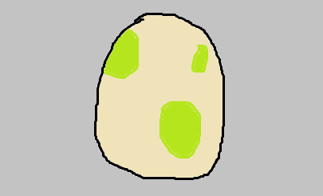
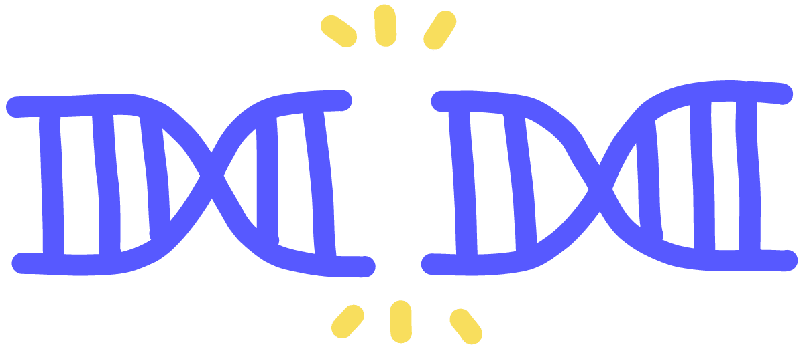

Even though I had a summer job, I was NOT about to pay over $300 for legitimacy's sake.
I wasn't going to use an external device explicitly for cheating, but I knew of another glitch I could take advantage of to circumvent this.
The way I see it, as long as I use the tools given to me by the game, exploiting the game's systems is as legitimate as obtaining them by buying a new game.
Using cheating hardware is as easy as pressing a button and completing the entire challenge in minutes, but this glitch took way longer than just it would have finding them in the other 3 games.

To keep a long story short, the game stores all of your Pokémon in two locations:
- Your Party, which has a max size of 6.
- Your PC, which has a max size of 420.
You use different interfaces to interact with the party and the PC, but they are stored adjacent to each other in memory.
You cannot access your PC outside of a specific location, but through a method called
"Glitzer Popping", you can access your PC from your party menu.
To do this, you will have to lower your party's base HP to zero without triggering a Game Over event, which can be achieved through the
"Pomeg Glitch".
By traversing up through your party with a fainted team, instead of looping back on itself when you try to go up past the first like usual, the game will then move your selector into to the PC boxes from your party.
Because the program counter is not coded to handle this situation, some of the data about the Pokémon in your PC gets swapped with the Pokémon to them in the PC.
By placing specific Pokémon next to each other in the PC with specific personal data, you can swap values to make one of them into an egg that hatches a completely different Pokémon!
This way, you can hatch any Pokémon from a glitched egg, making completing this challenge possible without purchasing all of the games in the generation!
Amazingly, we can do more with these eggs.
Using Arbitrary Code Execution, we can create eggs that force the game move the program counter when hatched to trigger events otherwise impossible to trigger!
The technique of making eggs to hatch any Pokémon was discovered in 2014, but when I was doing this, the technique of making eggs that trigger events had only been discovered a couple months prior!
The specific events I was interested in were warps to access content only available from Toys R' Us events as late as 2005.
These locations and events were hardcoded into the game on release, you only just needed to unlock it by going to these events in 2005.
Otherwise, it was impossible to access these locations without cheating devices.

I went on forums and watched the one or two videos that showed it actually working, and they were all on emulators.
At this point people were only talking about what it would be like to actually perform it on a physical copy.
I followed the tutorials to a tee, and it ACTUALLY WORKED!
I was, through no cheating devices, on an island that nobody had seen without a cheating device since 2005.
I mean, there had to be a couple other people like that had done this without posting anything anywhere, but it still felt like I was somewhere few people had ever been, and it felt amazing!
These were the last 4 Pokémon I had to catch, and I saved the last Pokémon by ID# for last, Deoxys.
I... am... done...